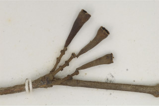
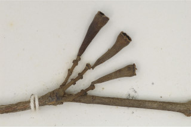

Trees to 12 m high.
12 ಮೀ. ಎತ್ತರದವರೆಗೆ ಬೆಳೆಯುವ ಮರಗಳು.
Trees to 12 m high.
மரங்கள் 12 மீ. உயரம் வரை வளரக்கூடியது.
Bark greyish-brown, smooth; blaze reddish.
ತೊಗಟೆ, ಬೂದು ಮಿಶ್ರಿತ ಕಂದು ಬಣ್ಣದಲ್ಲಿದ್ದು ನಯವಾಗಿರುತ್ತದೆ;ಕಚ್ಚು ಮಾಡಿದ ಜಾಗ ಕೆಂಪು ಛಾಯೆಯನ್ನು ಹೊಂದಿರುತ್ತದೆ.
Bark greyish-brown, smooth; blaze reddish.
மரத்தின் பட்டை சாம்பல்-ப்ரவுன் நிறமானது, வழவழப்பானது; உள்பட்டை சிவப்பு நிறமானது.
Branchlets terete, glabrous.
ಕಿರುಕೊಂಬೆಗಳು ದುಂಡಾಗಿದ್ದು ರೋಮರಹಿತವಾಗಿರುತ್ತದೆ.
Branchlets terete, glabrous.
சிறியநுனிக்கிளைகள் குறுக்குவெட்டுத் தோற்றத்தில் வளையமானது, உரோமங்களற்றது.
Leaves simple, opposite, decussate; petiole 0.4-0.6 cm long, slender, canaliculate, glabrous; lamina 7.5 x 2.5 cm, elliptic or elliptic-lanceolate, apex acuminate or acute and twisted, base cuneate or acute, margin entire, pellucid gland dotted, chartaceous, glabrous; midrib canaliculate; secondary_nerves many, parallel, slender; intramarginal nerve present; tertiary_nerves admedially ramified to obscure.
ಎಲೆಗಳು ಸರಳವಾಗಿದ್ದು ಅಭಿಮುಖವಾಗಿ ಜೋಡನೆಗೊಂಡಿದ್ದು ಕಾಂಡದ ಎರಡೂ ಕಡೆ ಎದುರು ಬದರಿನ ಲಂಬ ಸಾಲಿನಲ್ಲಿರುತ್ತವೆ;ತೊಟ್ಟುಗಳು 0.4-0.6 ಸೆಂ.ಮೀ. ಉದ್ದಹೊಂದಿದ್ದು ತೆಳುವಾಗಿರುತ್ತವೆ ಮತ್ತು ಮೇಲ್ಭಾಗದಲ್ಲಿ ಕಾಲುವೆಗೆರೆ ಸಮೇತವಿದ್ದು ರೋಮರಹಿತವಾಗಿರುತ್ತವೆ; ಪತ್ರಗಳು 7.5X2.5 ಸೆಂ.ಮೀ.ನ ಗಾತ್ರವಿದ್ದು ಅಂಡವೃತ್ತದಿಂದ ಅಥವಾ ಅಂಡವೃತ್ತ-ಭರ್ಜಿಯ ಆಕಾರ ಹೊಂದಿದ್ದು ಕ್ರಮೇಣ ಚೂಪಾಗುವ ಅಥವಾ ಚೂಪಾದ ತುದಿಯನ್ನು ಹೊಂದಿದ್ದು ತಿರುಚಿಕೊಂಡಿರುತ್ತದೆ,ಬುಡ ಬೆಣೆಯಾಕಾರದಲ್ಲಿ ಅಥವಾ ಚೂಪಾಗಿರುತ್ತದೆ,ಅಂಚು ನಯವಾಗಿರುತ್ತದೆ,ಪತ್ರಗಳು ಪ್ರಕಾಶ ಭೇಧ್ಯ ರಸಗ್ರಂಥಿ ಚುಕ್ಕೆಗಳ ಸಮೇತವಿರುತ್ತವೆ ಮತ್ತು ಕಾಗದವನ್ನೋಲುವ ಮೇಲ್ಮೈ ಹೊಂದಿದ್ದು ರೋಮರಹಿತವಾಗಿರುತ್ತವೆ ಮತ್ತು; ಮಧ್ಯ ನಾಳ ಕಾಲುವೆಗೆರೆಯ ಸಮೇತವಿರುತ್ತದೆ;ಎರಡನೇ ದರ್ಜೆಯ ನಾಳಗಳು ಹೆಚ್ಚಿನ ಸಂಖ್ಯೆಯಲ್ಲಿದ್ದು, ಸಮಾಂತರದಲ್ಲಿರುತ್ತವೆ ಮತ್ತು ತೆಳುವಾಗಿರುತ್ತವೆ;ಮೂರನೇ ದರ್ಜೆಯ ನಾಳಗಳ ಕವಲುಗಳು ಅಕ್ಷದ ಕಡೆಗಿರುತ್ತವೆ ಅಥವಾ ಅಸ್ಪಷ್ಟವಾಗಿರುತ್ತವೆ.
Leaves simple, opposite, decussate; petiole 0.4-0.6 cm long, slender, canaliculate, glabrous; lamina 7.5 x 2.5 cm, elliptic or elliptic-lanceolate, apex acuminate or acute and twisted, base cuneate or acute, margin entire, pellucid gland dotted, chartaceous, glabrous; midrib canaliculate; secondary_nerves many, parallel, slender; intramarginal nerve present; tertiary_nerves admedially ramified to obscure.
இலைகள் தனித்தவை, எதிரடுக்கமானவை, குறுக்குமறுக்கானவை; இலைக்காம்பு 0.4-0.6 செ.மீ. நீளமானது, மெல்லியது, குறுக்குவெட்டுத் தோற்றத்தில் கேனாலிகுலேட், உரோமங்களற்றது; இலை அலகு 7.5 x 2.5 செ.மீ., நீள்வட்ட வடிவானது அல்லது நீள்வட்ட-ஈட்டி வடிவானது, அலகின் நுனி அதிக்கூரியது அல்லது கூரியது மற்றும் திருகியது, அலகின் தளம் ஆப்பு வடிவானது அல்லது கூரியது, அலகின் விளிம்பு முழுமையானது, ஒளிபுகும் சுரப்பி புள்ளிகளுடையது, சார்ட்டேசியஸ், உரோமங்களற்றது; மையநரம்பு மேற்புறத்தில் அலகின் பரப்பைவிட பள்ளமானது; இரண்டாம் நிலை நரம்புகள் எண்ணற்றவை, இணையானவை, மெல்லியது; விளிம்பு நரம்பு (இண்ட்ராமார்ஜினல் நரம்பு) கொண்டது; மூன்றாம் நிலை நரம்புகள் அட்மீடியல்லி ராமிபைடு அல்லது கண்களுக்கு புலப்படாது.
Inflorescence axillary and terminal cymes; flowers, white; pedicel 0.2 cm; calyx tube funnel shaped.
ಪುಷ್ಪಮಂಜರಿ ಅಕ್ಷಾಕಂಕುಳಿನಲ್ಲಿ ಮತ್ತು ತುದಿಯಲ್ಲಿನ ಮಧ್ಯಾರಂಭಿ ಮಾದರಿಯವು;ಹೂಗಳು ಬಿಳಿ;ಹೂ ತೊಟ್ಟುಗಳು 0.2 ಸೆಂ.ಮೀ. ಉದ್ದವಿರುತ್ತವೆ;ಪುಷ್ಪಪಾತ್ರೆಯ ಕೊಳವೆ ಪ್ರಣಾಳದ ರೂಪದಲ್ಲಿರುತ್ತವೆ
Inflorescence axillary and terminal cymes; flowers, white; pedicel 0.2 cm; calyx tube funnel shaped.
மஞ்சரி இலைக்கோணங்களில் காணப்படும் மற்றும் மஞ்சரி தண்டின் நுனியில் காணப்படும் சைம் வகை; மலர்கள், வெள்ளை நிறமானது; மலர்காம்பு 0.2 செ.மீ.; புல்லி இதழ்கள் புனல் போன்றது.
Berry, 1.2 cm long, ovoid - turbinate, bright scarlet, crowned with persistent calyx.
ಬೆರ್ರಿ ಫಲಗಳು 1.2 ಸೆಂ.ಮೀ. ಉದ್ದವನ್ನು ಹೊಂದಿದ್ದು ಅಂಡ- ತಲೆಕೆಳಗು ಶಂಖುವಿನ ಆಕಾರ ಹೊಂದಿದ್ದು,ಪ್ರಕಾಶಮಾನವಾದ ಕಡುಗೆಂಪು ಬಣ್ಣ ಹೊಂದಿದ್ದು ಮುಕುಟದಲ್ಲಿ ಶಾಶ್ವತವಾದ ಪುಷ್ಪ ಪಾತ್ರೆಯನ್ನು ಹೊಂದಿರುತ್ತವೆ.
Berry, 1.2 cm long, ovoid - turbinate, bright scarlet, crowned with persistent calyx.
முழுச்சதைகனி (பெர்ரி), 1.2 செ.மீ. நீளமானது, முட்டை-டர்பினேட் வடிவானது, கருஞ்சிவப்பு நிறமானது, நிரந்தரமான புல்லி இதழ்களுடையவை.
 
